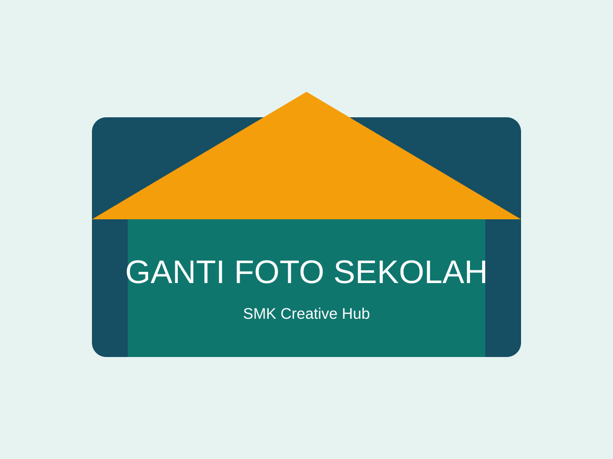

Program Keahlian
Kenali bidang keahlian dan kompetensi yang dipelajari.
Lihat jurusan →Belajar • Berkarya • Bertumbuh
Ruang informasi sekolah, program keahlian, kegiatan, dan karya kreatif siswa.
Jelajahi Program Keahlian
Kenali kami
Pembelajaran kejuruan menghubungkan pengetahuan, keterampilan, dan kreativitas.
Kenali bidang keahlian dan kompetensi yang dipelajari.
Lihat jurusan →Informasi kegiatan pembelajaran dan pengembangan diri.
Lihat kegiatan →Apresiasi hasil praktik dan kreativitas peserta didik.
Lihat galeri →